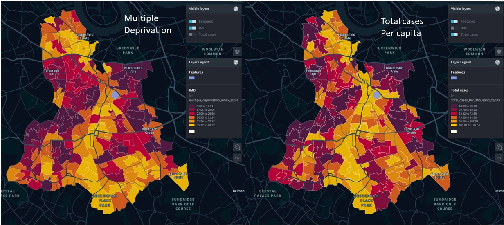
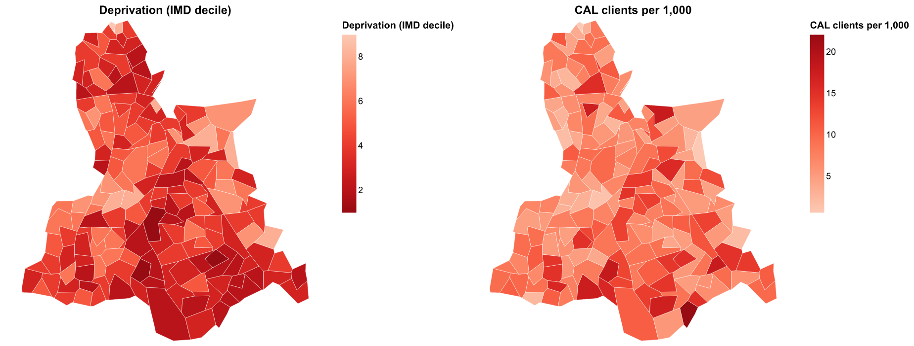
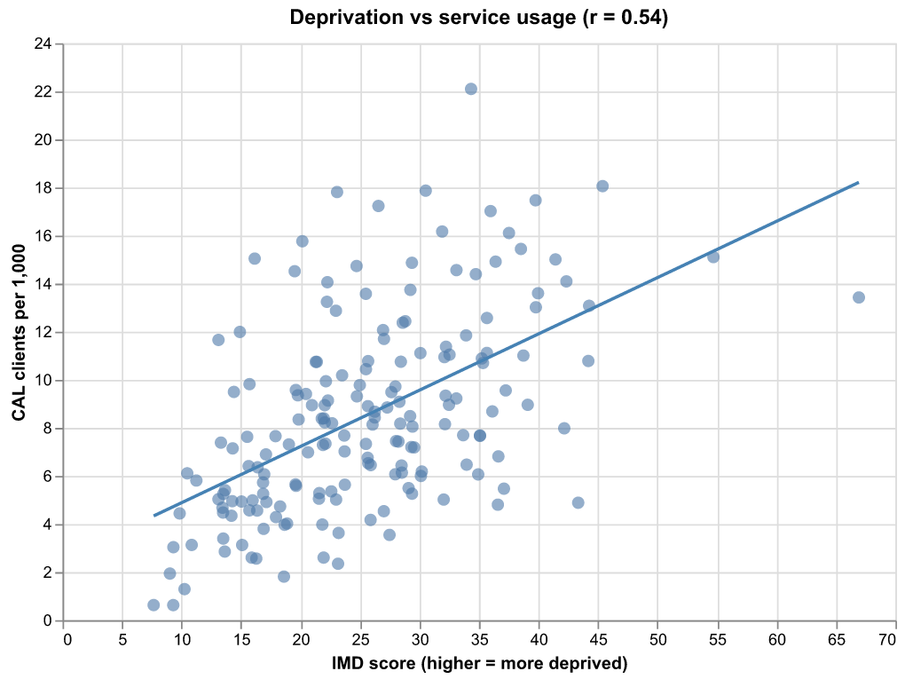

CAL Vulnerable Client Analysis
Reference article: DataKind UK - Citizens Advice Lewisham
More about what Citizens Advice Lewisham is doing: Citizens Advice Lewisham
Problem Statement
Citizens Advice Lewisham (CAL) needed to identify 'vulnerability hotspots' - areas with high need but limited access to resources - to optimize service delivery.
Key objectives:
- Map vulnerability hotspots in Lewisham
- Optimize service delivery based on geographic need
- Validate service targeting effectiveness
Dataset Involved
CAL Vulnerability Framework: Internal assessment of service users' ability to cope with life changes, based on factors like low income, housing, mental health, and disability.
Index of Multiple Deprivation (IMD): Government dataset measuring seven deprivation domains (income, employment, crime, etc.) mapped to Lower Layer Super Output Areas (LSOAs) - geographic units of ~1,500 people each.
Desired Output
Deprivation Map: Visual representation showing LSOAs colored by deprivation level (red = least deprived, yellow = most deprived), revealing higher deprivation in southern borough areas.
Service Usage Map: Geographic distribution of CAL clients per capita, with color coding indicating service demand (yellow = high usage, red = low usage).
Key Finding: Strong correlation between deprivation levels and service usage - areas with highest deprivation scores also showed highest client volumes, validating CAL's service targeting.

Figure 1: Geographic distribution of CAL clients per capita across Lewisham LSOAs and IMD scoresReplicating the Output with KindTech
Data Requirements
Internal Dataset:
- Individual client records with vulnerability factor scores
- Postcode data for geographic mapping
- Goal: Map postcodes to LSOAs to calculate clients per capita
External Datasets:
- Index of Multiple Deprivation (IMD): LSOA-level deprivation scores for overlay analysis
- Census Data: Population figures for per-capita calculations
- LSOA Boundaries: Geographic polygons for spatial analysis and mapping
Analysis Workflow
- Data Preparation: Convert postcodes to LSOA codes using geographic lookup
- Aggregation: Calculate total clients per LSOA
- Normalization: Compute clients per capita using census population data
- Spatial Analysis: Overlay client density with IMD scores
- Visualization: Create comparative maps showing deprivation vs. service usage
Reproduction
A runnable, end-to-end reproduction lives in
examples/cal_vulnerable_client.py
(a marimo notebook). It chains three KindTech connectors,
all joining on the 2021 LSOA geography_code:
 — run it live in the browser (the molab cloud runtime fetches real ONS
data), or locally with
— run it live in the browser (the molab cloud runtime fetches real ONS
data), or locally with uv run marimo edit examples/cal_vulnerable_client.py.
from kindtech import postcodes_to_geography, load_imd, load_geodata
# 1. Client postcodes -> LSOA (the step real client data would use)
clients = postcodes_to_geography(client_postcodes, geography_type="LSOA")
# 2. Deprivation + population per LSOA (IoD 2025, on 2021 LSOAs)
imd = load_imd(nation="England") # imd_decile, imd_score, population
Everything is on 2021 LSOAs — no crosswalk
The postcode connector returns 2021 LSOA codes, IMD 2025 is published on
2021 LSOAs (and ships a population denominator), and the default LSOA
boundaries are 2021. So deprivation, population and client geography line up
on one geography_code with no vintage conversion. (The older composite
load_imd(year=2019) is on 2011 LSOAs and would need a crosswalk.)
Client records are private, so the notebook generates synthetic clients per LSOA at a rate that rises with deprivation, then normalises to clients per 1,000 residents.
Hotspots vs usage — deprivation (left) and CAL client rate (right). Shared dark areas mean clients come from the most-deprived LSOAs:

Figure 2: IMD 2025 decile (left, dark = most deprived) vs synthetic CAL clients per 1,000 residents (right). The hotspots align.Does usage track deprivation? Each LSOA's deprivation score against its client rate:

Figure 3: A clear positive correlation between deprivation and clients per capita — the direction the original study found, validating CAL's targeting.To run on real data, feed the real client postcodes through step 1 and
aggregate per geography_code; the IMD join, per-capita maths and maps are
unchanged.
Lessons Learned
Key takeaways and recommendations:
- Geographic targeting works: The strong correlation between deprivation and service usage validates CAL's approach to targeting high-need areas
- Data integration is crucial: Combining internal service data with external deprivation indices provides powerful insights
- Visualization drives action: Clear maps help stakeholders understand and act on the findings
- Per-capita analysis matters: Normalizing by population reveals true service demand patterns
- LSOA-level granularity is appropriate: Geographic units of ~1,500 people provide sufficient detail without compromising privacy